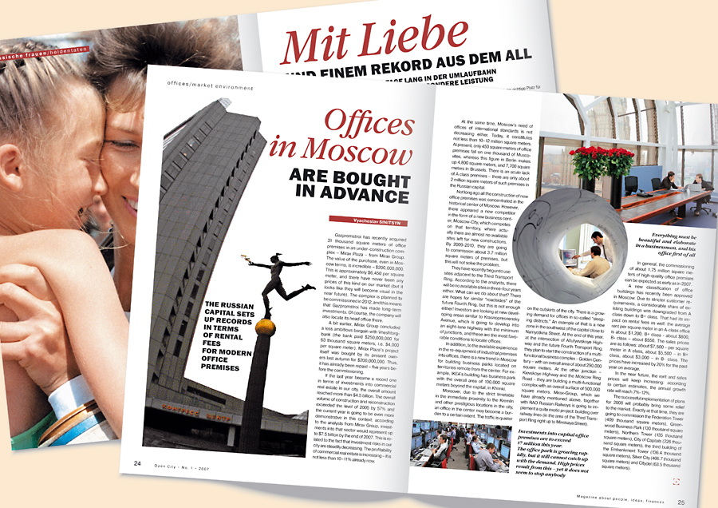

Персональный сайт Анастасия Водовозова |
Веб-технологии
Портфолио
Участие в конфиренции "Инновации в бизнес-информатике"
На конференции представила исследование, посвященное современным методам оптимизации
бизнес-процессов с использованием информационных технологий.
Моя презентация получила высокую оценку от экспертов, и моя статья была опубликована в сборнике конференции.
Публикация статьи в журнале "Технологии и бизнес"

Написала статью, в которой рассматривала современные тенденции в области бизнеса и их влияние на
управление предприятием. Статья была опубликована в престижном журнале "Технологии и бизнес" и получила
признание от экспертов
Участие в форуме "Цифровая трансформация и бизнес-процессы"
Приняла участие в форуме, где выступила с презентацией о роли бизнес-информатики в цифровой трансформации
компаний. Моё выступление вызвало интерес участников форума, и я была приглашена дать интервью для местного бизнес-журнала.
Создание онлайн-платформы для управления бизнес-процессами
Разработала собственную онлайн-платформу, которая помогает компаниям оптимизировать и автоматизировать
свои бизнес-процессы. Этот проект получил инвестиции и был успешно внедрен в нескольких местных компаниях,
что сэкономило им значительные ресурсы и улучшило эффективность работы.
Участие в международном симпозиуме по бизнес-аналитике
Приняла участие в симпозиуме, где презентовала свои исследования в области бизнес-аналитики и создания
интеллектуальных систем для принятия решений. Моя презентация получила признание от международных ученых, и я была приглашена
для сотрудничества над проектами на глобальном уровне.